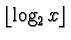

0.10.2 Integer Coding
Section note: this description and source code are provided courtesy
of Hugh Williams.
Integer coding is a method by which a set of integer values can be
represented more efficiently. Two of the most often used methods of
integer coding are called Elias codes and Golomb codes.
Both Elias and Golomb codes are frequently used in compressing
inverted indexes of English text.
In the Elias gamma code, a positive integer x is represented by:
in unary. (that is,

0-bits followed
by a 1-bit), followed by the binary representation of x
without its most significant bit.
Thus the number nine is represented by 0001001, since:
or 0001 in unary, and 9 is 001 in
binary with the most significant bit removed. In this way, 1 is
represented by 1, that is, is represented in one bit. Gamma coding is
efficient for small integers but is not suited to large integers for
which parameterized Golomb codes or a second Elias code, the delta
code, are more suitable.
Elias delta codes are somewhat longer than gamma codes for small
integers, but for larger integers, such as ordinal sequence numbers,
the situation is reversed. A delta code stores the gamma code
representation of an integer x, followed by the binary
representation of x less the most significant bit. However, while
Elias codes yield acceptable compression and fast decoding, better
performance in both respects is possible with Golomb codes.
Golomb codes are a form of parameterized coding in which integers to
be coded are stored as values relative to a constant k. Using
Golomb coding, a positive integer x is represented in two parts: the
first is a unary representation of the quotient:
the second is a binary representation of
the remainder: x-qk-1. In this way, the binary representation
requires
bits.
Witten et al. report that for cases where the probability of any
particular value occurring is small, an approximate calculation of kcan be used. Where there is a wide range of values to be coded and
each occurs with reasonable frequency, a practical global
approximation of the Golomb parameter k is
where N is the number of documents,
p is the number of distinct terms in the collection, and f is the
count of document identifiers stored in inverted lists, that is, fis the sum of the lengths of all inverted lists. This model for
selection of k is often referred to as a global Bernoulli model,
since each term is assumed to have an independent probability of
occurrence and the occurrences of terms have a geometric distribution.
Another approach to selecting k is to use a local model. Local
models use the information stored within a list to calculate an
appropriate k value for that list; local models result in better
compression than global models, but require a parameter for each
locality. For example, by using a simple local Bernoulli model for
storing sequence identifiers, a possible choice of a k value for a
given list is an approximation of the mean difference between the
document identifiers in that list, or, using the scheme above,
where l is the length of a
given list, that is, the count of entries in the list.
Skewed Bernoulli models, where a simple mean difference is not used,
typically result in better compression than simple local models.
With integers of varying magnitudes, as is the case in document
occurrence counts and inverted-file offsets that vary from 1 to the
database size, efficient storage is possible by using a variable-byte
integer scheme. We use a representation in which seven bits in each
byte is used to code an integer, with the least significant bit set to
0 if this is the last byte, or to 1 if further bytes follow. In this
way, we represent small integers efficiently; for example, we
represent 135 in two bytes, since it lies in the range
, as 00000011 00001110; this is read as 00000010000111 by
removing the least significant bit from each byte and concatenating
the remaining 14 bits.
|